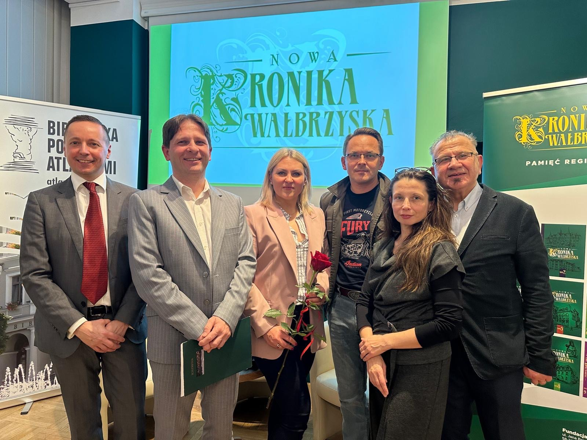
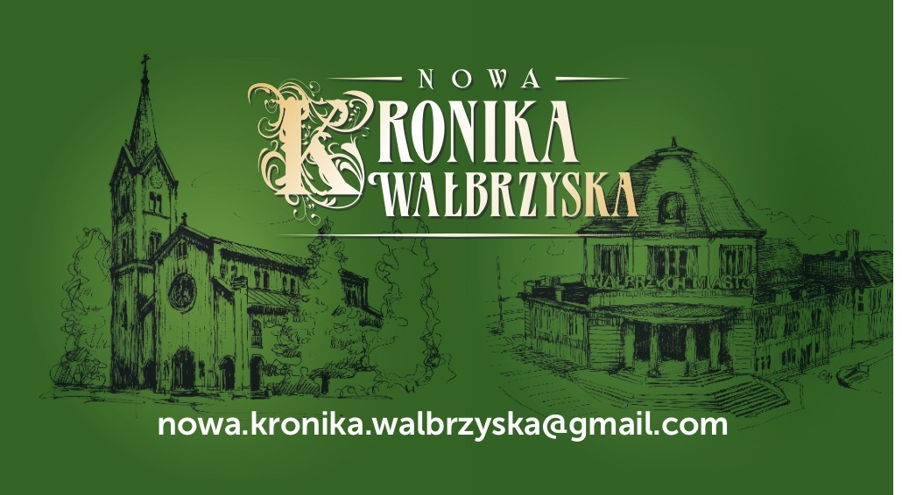

Aktualności
Promocja "Nowej Kroniki Wałbrzyskiej" t. 11 oraz Obecności
W dniu 27 października 2025 r. w Powiatowej i Miejskiej Bibliotece Publicznej „Bibliotece pod Atlantami” w Wałbrzychu odbyła się promocja publikacji poświęconej Elżbiecie Kwiatkowskiej-Wyrwisz pt. Obecność oraz 11 tomu „Nowej Kroniki Wałbrzyskiej”. Pierwszą część spotkania poświęconą książce poprowadziła Sława Janiszewska. Była to rozmowa z redaktorami: Justyną Gorzkowicz i Wojciechem Klasem. Następnie odbyła się promocja rocznika wydanego pod redakcją Piotra Reteckiego. W obu wydawnictwach miał swój udział grafik Ireneusz Piwowarski.

Na zdjęciu od lewej: Wojciech Klas, Piotr Retecki, Kornelia Balul, Ireneusz Piwowarski, Justyna Gorzkowicz, Janusz F. Kułak.
O nas
Wyjątki ze STATUTU Fundacji Museion
§ 1 Postanowienia ogólne
- Fundacja ustanowiona aktem notarialnym 20.02.2012 r., działa na podstawie prawa polskiego i statutu (zmienionego w 2022 r.).
- Fundacja jest apolityczna i niezwiązana z żadnym wyznaniem.
§ 2
Fundacja posiada osobowość prawną.
§ 3
Siedzibą Fundacji jest Wałbrzych.
§ 4
Teren działalności obejmuje Polskę oraz działalność zagraniczną.
§ 6 Cele działania
- Działalność w zakresie dziedzictwa kulturowego, nauki i kultury.
§ 11 Władze
Organami fundacji są Rada Fundacji i Zarząd.
Nowa Kronika Wałbrzyska

"Nowa Kronika Wałbrzyska" - rocznik ukazujący się od 2013 roku
Tomy


T. 7 (2019) T. 8 (2021) T. 9 (2023) T. 10 (2024) T. 11 (2025) T. 12 (2026)
- w przygotowaniu
Informacje
Wyzwania redakcyjne i wydawnicze nie zmieniają się od ostatnich kilku lat. Idea kontynuacji wyawania rocznika jest wyłącznie rezultatem jej zrozumienia przez ludzi i organizacje, którym na nim zależą. Do nich zaliczają się: Redaktor, Autorzy, Recenzenci, Grafik oraz Fundacja Museion w Wałbrzychu przy wsparciu Akademii Nauk Stosowanych Angelusa Silesiusa w Wałbrzychu. Tym bardziej należy docenić ten niesamowity i bezinteresowny wkład wielu osób i organizacji w powstanie rocznika. Ich wysiłek zawsze jest na najwyższym, akademickim poziomie.
Linki
Nowa
Kronika Wałbrzyska, T. 1 (2013)
Nowa Kronika Wałbrzyska, T. 2 (2014)
Nowa Kronika Wałbrzyska, T. 3 (2015)
Nowa Kronika Wałbrzyska, T. 4 (2016)
Nowa Kronika Wałbrzyska, T. 5 (2017)
Nowa Kronika Wałbrzyska, T. 6 (2018)
Nowa Kronika Wałbrzyska, T. 7 (2019)
Nowa Kronika Wałbrzyska, T. 8 (2021)
Nowa Kronika Wałbrzyska, T. 9 (2023)
Nowa Kronika Wałbrzyska, T. 10 (2024)

Oficyna Wydawnicza

Wydawnictwo Fundacji Museion popularyzuje wiedzę dotyczącą regionu wałbrzyskiego.
Serie wydawnicze
- Biblioteka Wałbrzyska
- Wałbrzyska Historia
- Wałbrzyski Region
- Wałbrzyskie Portrety Biograficzne

Nowości
Wydaje rocznik „Nowa Kronika Wałbrzyska”.
- ul. Jana Brzechwy 11/1a, 58-300 Wałbrzych
- fundacja.museion@interia.pl
- nowa.kronika.walbrzyska@gmail.com
Promocje i wydarzenia
Nowa Kronika Wałbrzyska
Informacje o promocjach Nowej Kroniki Wałbrzyskiej.
Promocje wydawnictw
Informacje o promocjach wydawnictw.
Spotkania i wydarzenia
Informacje o wydarzeniach organizowanych przez Fundację.
Wizytówka
Fundacja Museion
ul. Jana Brzechwy 11/1a, 58-300 Wałbrzych